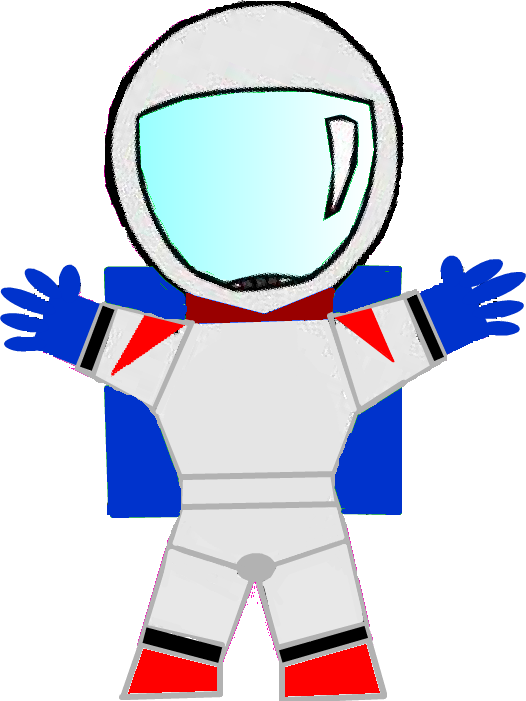

It took a lot of time: increasing typing speed, learning the system inside and out, recognizing area that could be improved. Now I am ranked number 1 in the company rankings for level 1 IT associates.
I attribute much of my success to the hot strings program I implemented. I installed a copy of Autohotkey and wrote a script that would fill in text like a text expander. Autohotkeys calls it hot strings. I type a few letters and boom, the script executes and fills in a sentence. This speeds up my ticket times greatly. I hope to implement it company wide for all to use in the near future. The trick is getting the company to recognize its value.
Went from Game Master at Blizzard to work IT with the Home Depot. Contracts end but working at Blizzard was one of the greatest jobs I have had. I hope to make if back there one day, but for now onto new adventures.
I went through a period as a Contractor with KForce before getting hired on with The Home Depot permanently. I hope to move up to a programming or scripting position soon so I can put my College degree to work.
I would be working on my new side project of putting together a database for my wifes recipes… BUT. We are busy running around Azeroth killing every Alliance dog we see. She is OK with putting the project on hold, so we can get geared up and ready to raid with our guild on Hydraxis, Stryke Force!
The new Battle for Azeroth expansion has been awesome! Great work Blizzard, and I don’t say that just because I work there. There is a whole island named after my character Tuskmasher. Maybe it is a coincidence that there is a Tusk Isle and Blizzard did not in fact name a part of the game for me, but I like to believe they do like me that much. Thank you Blizzard I love you too!
I will get back to work on it after the hype on BFA has died down a little and I have caught up to the item levels of my guild mates. It will be soon, I am sure…
I Recently started a new job where I get to be a Game Master for Blizzard Entertainment. It is very exciting and I cannot remember a time when I have had soooo much fun at a job. However, this job does affect my ability to develop a video game. I am under a non-compete, that means no making games. I am ok with that and I understand that a game company does not want their employees making games that may compete with their own someday.
Now back to what I am going to do with my time if I cannot make a video game? It is a tough one (I know, right?) I have been planning to start on my own project for some time now and was just waiting to graduate college. Now life has tossed a few more speed bumps my way, but no matter, I will overcome!
You might be asking yourself the same question that I am at this point. “If you can make a game Jason what are you going to do… besides play WoW?”. The answer is not so bad, make a website or an application. Its not a video game, but it will give me something useful to do. So here it is, are you ready? *Drum roll*
My wife loves to cook, and she is great at it. The problem is that she has recipes all over the place. If she doesn’t have one memorized, then she is likely to just look up something online to save time and the effort of searching for that one recipe out of the who knows how many she has. The plan is to make a website with a companion android app to allow her to organize her recipes and easily look them up.
The bonus is that this makes me look like a great husband. *Cheering* I mean I am already, but some credit every now and then is great.
I have my portfolio up and running. I have been working on it for… let’s say a week and a half. I was given a bunch of good advice from Adam Estela whom I met on Linkedin, and he told me to keep a blog and twitter account of everything I am doing. He says it makes it easy for potential employers to see what I am up too. I was great advice so thank you Adam and here I go!
I am starting a job on Monday as a contracted game master for Blizzard. I am super psyched about it, I am sure it will go great! On top of that, now that my portfolio webpage is all but complete, I need to start on a game project. I have a few ideas in my back pocket, I will let you all know as soon as I make a decision of what to start on. It might even involve this guy.
Captain Reynolds, and he has some wormholes that need exploring, they don’t explore themselves after all.